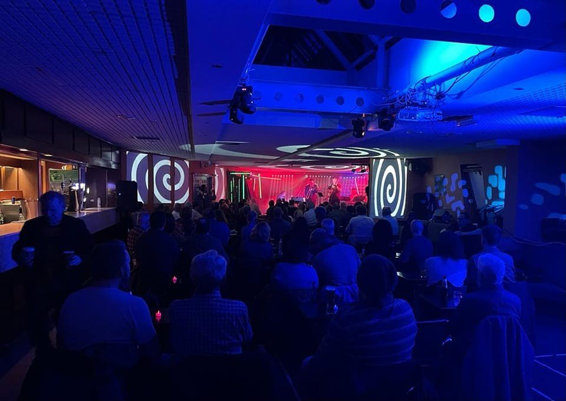
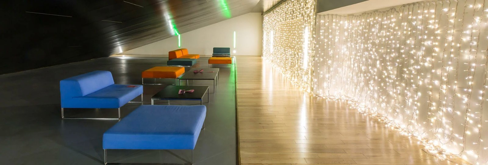
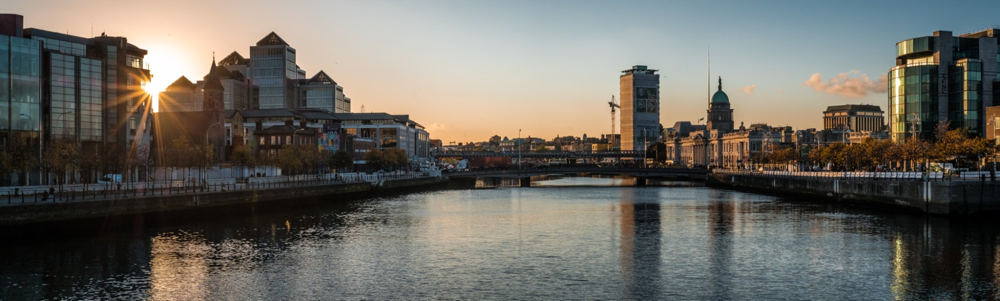
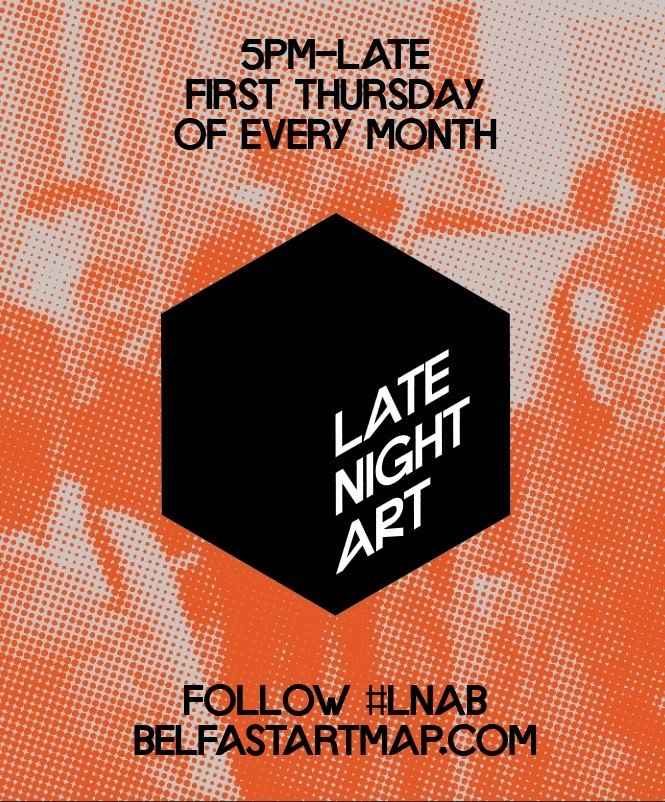

Tour Temple Bar, Historia de los Pubs Irlandeses
Irish Famine Exhibition Dublin
Guided Tour of the Remains of St. Mary’s Abbey
Wit as a Weapon: Satirical Cartoons of the French Revolution


Event
Guide
Picks
5 Oct – 11 Oct
Guide
Picks

Ruby Sessions
You’re in Dublin on a Tuesday and want music without the shouting? The Ruby Sessions upstairs in Doyle’s is three acoustic acts a night, candles on the tables and a room that actually listens.
Twenty-five years in, the format hasn’t changed: nobody is announced, the door is a tenner, and the money goes to the Simon Community. Doors at eight; the seats go first, so come early and stay for all three.

Breaking
How to Make the Most of a Weekend Visit to Dublin
Bolands Mills is set to come alive this Culture Night
A free evening of live music, art, storytelling and movement, with performances from AE MAK, Sorcha Richardson and Zaska on the Factory Main Stage.
The Factory Main Stage will host performances from AE MAK, Sorcha Richardson and Zaska, while DJ and chef Marcus O’Laoire brings a relaxed vinyl listening session to Grindstone Coffee.
Friday 18 September · 6.30pm
Bolands Mills, Dublin 4
Quick watch
Inside the Last Night at the Bernard Shaw